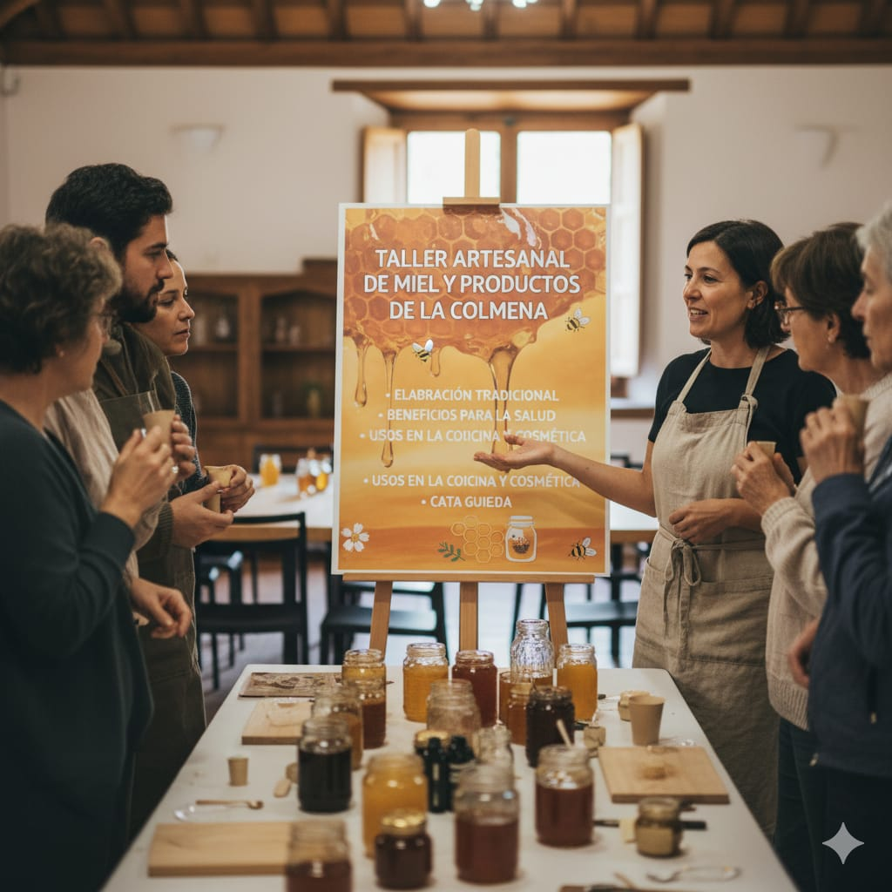

AGENDA
9:00
10:00
Participación de profesores consejeros
Evento General
PRIMER BLOQUE: PRESENTACIONES

Identificar preferencias del consumidor de carne de pavo en tres ciudades de México
10:00
-
10:10
Ponente: MC. Mauricio Arturo Guillén Alvarado
Doctorado
Análisis de la cadena de valor de la chía (Salvia hispanica L.) en Bolivia
10:10
-
10:20
Ponente: MC. Ivon Arce Machuca
Doctorado
SEGUNDO BLOQUE: TALLERES
10:20
10:50
Manejo alternativo de plagas orientado a extractos vegetales
Talleristas: Ing. José de Jesús Macedo G. / Ing. Osiel Valverde Lucas
Taller

10:50
11:20
El ajo (Allium sativum): importancia agrícola y retos fitosanitarios
Tallerista: Ing. Citlalmina Erandy Montes Hernández
Taller
11:20
11:50
Evaluación del efecto de microorganismos nativos en la síntesis de metabolitos secundarios en Justicia spicigera (muitle)
Tallerista: Ing. Ramón García Díaz
Taller
11:50
12:05
Traspaso de la tasa de cambio
Talleristas: Dr. Miguel Angel Martínez Damián / Dr. Jaime Arturo Matus Gardea
Ponencia
12:05
12:15
RECESO
Receso
TERCER BLOQUE: CARTELES Y TALLERES
Modelo de exportación de productos agrícolas mexicanos a Europa
12:15
-
12:25
Ponente: Lic. Ángeles Julieta Martínez Mendoza
Cartel
12:25
12:55
Finanzas personales y Riesgo
Talleristas: MC. José Luis Rodríguez Pineda / MC. Juan Antonio Islas Samaniego
Taller
12:55
13:25
Estrategias comerciales y sistema de producción agroecológica
Tallerista: MC. Diego Óscar Banda Moreno
Taller
13:25
13:55
Elaboración de sales de cempasuchitl
Tallerista: Ing. Valentina Trueba
Taller
13:55
14:25
Presentación física de mieles y como identificar las mieles falsas
Tallerista: Ing. María Paula Rodríguez
Taller
14:25
14:40
El arte del método de estudio de casos en la investigación y enseñanza de agronegocios
Tallerista: Dra. Ma. del Carmen López Reyna
Taller
14:40